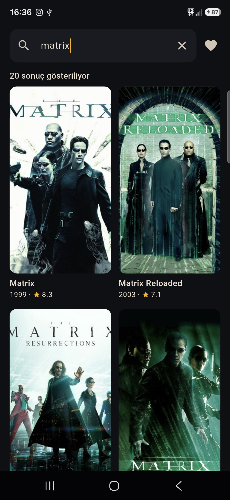
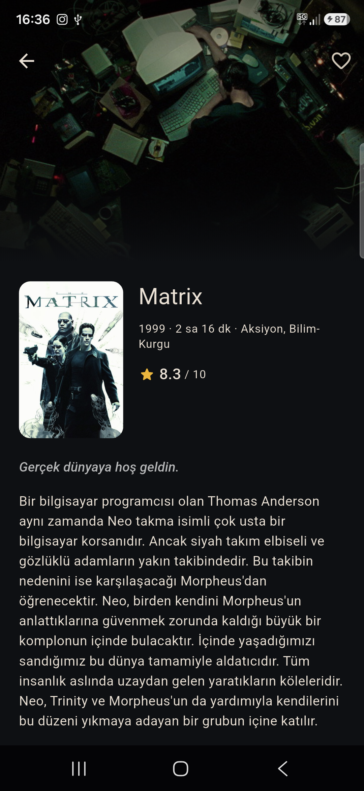
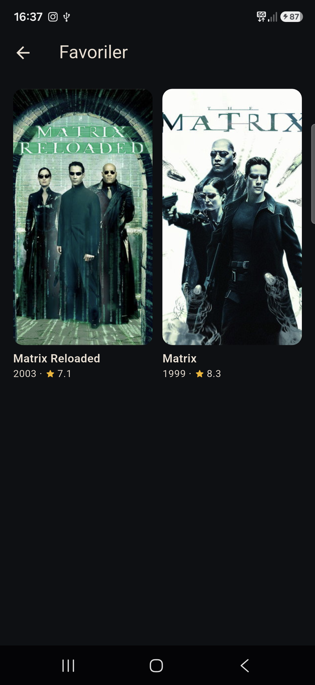

Yazıyorsun, posterler akıyor; dokununca künye açılıyor. TMDB API'si üzerine kurulu bir Android uygulaması — bu haftanın konusu arayüz değil, ağ katmanıydı.
01 — Ne yaptım
Arama kutusuna yazıyorsun, yazmayı bırakmandan kısa süre sonra poster ızgarası doluyor. Bir postere dokununca künye açılıyor: yıl, süre, tür, puan, özet. Kalbe dokununca film telefonda kalıyor — bunu sonradan cihaz yedeğini kapatarak gerçekten doğru hâle getirdim, hikâyesi 06'da.
Kutu boşken ekranda popüler filmler duruyor, yani hiçbir zaman bomboş değil. Aşağı kaydırdıkça sonraki sayfa ekleniyor.



02 — Neyi bilerek yapmadım
Bu haftanın konusu ağ katmanıydı. Yukarıdakilerin hepsi "bir ekran daha" demek; hiçbiri bu haftaki yeteneğe yeni bir şey katmıyordu. Çevrimdışı veritabanını özellikle eledim, çünkü Part 01 ve Part 02 zaten yerel depolamayı gösteriyor.
03 — Bu hafta gösterdiğim teknik yetenek
Ağ üzerinden arama, "API'yi çağır ve listeyi göster" değil. Kullanıcı ağın cevap verdiğinden hızlı yazar ve cevaplar sorulma sırasına göre dönmez. Bunu dört parça çözüyor:
| Parça | Çözdüğü sorun |
|---|---|
| 400 ms debounce | Her tuş vuruşuna değil, yazılan kelimeye tek istek. |
| CancelToken | Eski sorgunun geç gelen cevabı yeni sonuçların üstüne yazamaz. |
| Sayfalama | Sonraki sayfa liste bitmeden iki ekran önce isteniyor; tekrar eden filmler id'ye göre eleniyor. |
| Dört ayrı durum | Yükleniyor, hata, boş sonuç ve "sayfa hatası" aynı ekran değil. |
Sonuncusu en kolay atlanan ayrıntı. Ekranda zaten elli film varken sonraki sayfa hata verirse listeyi silip hata ekranı göstermek yanlış olur — liste kalıyor, altta küçük bir uyarı çıkıyor.
Ağ hataları arayüze DioException olarak hiç ulaşmıyor. Hepsi tek bir dosyada
dokuz türe ve dokuz sade cümleye çevriliyor.
04 — Aldığım karar
Flutter'daki standart cevap flutter_dotenv: anahtarı bir .env
dosyasına koy. O dosya yanlış bir git add kadar uzakta public olur, üstelik
APK'nın içine varlık olarak zaten gömülür.
Bunun yerine anahtarı derleme zamanında verdim — hiç dosya oluşmuyor.
flutter run --dart-define=TMDB_KEY=<anahtar>
lib/core/tmdb_config.dart
static const apiKey = String.fromEnvironment('TMDB_KEY');
Fark hata anında açılıyor: .env yaklaşımında anahtarı sızdırmak için dikkatsiz
tek bir commit yetiyor. --dart-define'da sızdıracak dosya yok. Bir paket de
eksiliyor.
Ama dürüst sınır da aynı paragrafa ait: bu yöntem anahtarı depodan gizler, derlenmiş APK'dan gizlemez — orada düz metin olarak durur. Onu gizleyecek tek şey, uygulamayla TMDB arasına girecek kendi sunucum olurdu. Bu uygulama APK olarak dağıtılmıyor; sınırda durdum ve sınırı README'ye yazdım.
Neden bu hafta Riverpod? Part 01 ve Part 02'de InheritedWidget
yetiyordu. Burada tek bir nesne bir zamanlayıcı, bir iptal jetonu ve sayfalanmış bir liste
tutuyor; iki ekran onu okuyor. Durum yönetimi kütüphanesinin kendini ödemeye başladığı yer
tam burası.
http:// isteği neden yola çıkmadan reddediliyor? TMDB zaten
HTTPS veriyor, ama koda bir gün http:// yazılırsa anahtar ağda açık gider.
Kimsenin o hatayı yapmayacağına güvenmek yerine bir araya girici isteği kapıda kesiyor.
Günlükler neden maskeleniyor? Dio'nun hazır günlük araya giricisi tam adresi basıyor ve anahtar adresin içinde. Konsol ekran görüntüsü ya da paylaşılan bir hata kaydı anahtarı sızdırabilir; bu yüzden günlükçü anahtarı basmadan önce değiştiriyor.
05 — Nasıl doğruladım
Zamanlama davranışı ekrana bakarak doğrulanamaz. TMDB'nin yerine sahte bir depo geçiyor: aldığı çağrıları sayıyor, istenince gecikme ve hata üretiyor.
Poster indirmeyi test etmedim: orada benim kodum yok, cached_network_image var.
Bu haftaki risk zamanlamada ve durum yönetimindeydi; testler de orada.
06 — Ne öğrendim
İptal edilen istek bir istisna olarak geliyor ve onu hata gibi ele alırsan, sadece yazmaya devam eden kullanıcının önüne hata ekranı koyuyorsun. İptalin, sekiz gerçek hatadan ayrı kendi türü olması gerekti.
Riverpod 3'te valueOrNull kaldırılmış, value zaten null dönüyor.
Artık var olmayan bir getter'a on dakika gitti. Bir diğeri: Uri yıldızı
yüzdeyle kodluyor, anahtarı yıldızla maskeleyince günlük okunmaz hâle geldi — maske düz
sözcüğe döndü.
Yukarıda "favoriler telefonda kalıyor" yazmıştım ve bu doğru değildi. Android varsayılan olarak uygulama verisini kullanıcının Google hesabına yedekler; hiçbir şey yazmazsan yedek açıktır. Kod doğruydu — kodun dışındaki platform varsayılanı farklıydı. Üç satırlık manifest değişikliğiyle kapatıldı.
Buradan öğrendiğim şey teknik değil: artık her iddianın yanına onu kanıtlayan komutu koyuyorum; okuyan kendi çalıştırıp görebilsin.
İncele